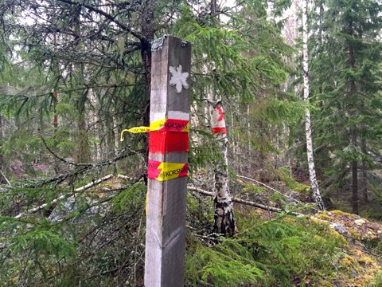

Ronny Fredrikssons webbsidor om Florarna
När vår medlem och vän Ronny Fredriksson gick bort efter en tids sjukdom väcktes ett stort engagemang för att rädda kvar de webbsidor som Ronny tagit fram om naturen på Florarna. Naturskyddsföreningen i Uppsala län fick hjälp av medlemmar och andra engagerade att snabbt samla in pengar för att betala webbhotellet.
Nu har en långsiktigt förvaltning av sidorna ordnats av Naturskyddsföreningen.
Vi vill hedra Ronny Fredrikssons minne genom att bevara och sprida information om ett av Nordupplands finaste naturområden Florarna.
Ronny Fredrikssons naturintresse växte när han som ung grabb upptäckte Florarna. Under en period var Ronny en mycket omtyckt ledamot i Naturskyddsföreningen Uppsala läns styrelse.
Det var under den tiden han också var tillsyningsman i Flororna där han hade ett verkligt betydelsefullt uppdrag.
Ronny gick sedan vidare med sin karriär i säkerhetsbranschen och det fackliga arbetet.
Men han fortsatte att njuta av naturen på Florarna. Han lärde oss att vårt arbete med att slå vakt om naturen är nödvändigt.
En kort tid efter att Ronny gått bort, så kom nyheter att vargtiken Flora som länge gått ensam på Florarna träffat en hane. Tänk om Ronny fått veta det.
Tack Ronny för alla dina insatser! Nu hoppas vi att fler både människor, andra djur, svampar och växter kommer trivas i Nordupplands vildmarksområde.
Maria Gardfjell,
För Naturskyddsföreningen Uppsala län
--------------------------------------------------------------------------------
Hjärtligt välkomna till Ronny Fredrikssons sidor om Florarna med omgivningar!
---------------------------------------------------------------------------------
Läs om den dödsdömda skogen som blev räddad - Tvestensskogen - I naturreservatets yttre zon.

Naturreservatets yttre zon innebär i praktiken inget skydd, men snart utvidgas den inre zonen. Foto: Ronny Fredriksson
--------------------------------------------------------------------------------------------------------------------------
Syftet med dessa sidor är att bidraga till naturskyddet, dokumentera, ge information, inspirera och kanske underlätta besök i Florarna. En mer personlig orsak är att ha något annat än det ordinarie jobbet att syssla med, dvs ge mig vila och rekreation :-)
Men för mig personligen handlar det om mycket mer….
Om Florarna på Facebook
Bild från tjäderspel i östra Florarna 2012. Foto: Ronny Fredriksson
Jag tror att vi människor kan få speciella relationer till ett stycke natur…..jag har genom åren fått en andlig relation till Florarna med omgivningar. Denna relation är mycket gammal. Min släkt har levt och dött i Florarnas närhet åtminstone sedan början av 1700-talet. Vi har bott vid Åkerbysjöns södra strand….ännu bär ett torp där namnet Hagelstorp……vi har bott i Risön…..vi har bott i Kalvsbo……vi har bott i Norrtorpen……vi har bott vid Hagels Boda, Ursbo….vi har bott vid Dammstugan, Ursbo, vi har bott vid Bennbo i Film, vi har bott i Bryttbyn…..mina rötter finns kring och i Florarna….jag stannar ofta upp på dessa platser och tänker på tidigare släktgenerationer.
Men det handlar också om minnena från den första vandringen till Agnsjön med min pappa Åke och farfar Fritz på 1970-talet. Det handlar om mina första egna vandringar….då familjen släppte av mig i Tegelsmora och plockade upp mig i Sibbo….åren har gått….jag har levt med Florarna…under mitt liv…olika årstider….med olika vänner…..med familj, mostrar och kusiner.
Jag har plurrat, jag har frusit, jag har svurit över de ibland extremt oländiga förhållandena i området.
Men jag har också haft oförglömliga upplevelser vid lägerelden i den mörka skogen, ugglorna som ropat, orrarnas och tjädrarnas spel. Upplevelser tillsammans med goda vänner och familj. Men oftast ensam.
I boken "Nordiska Nätter - Djurliv mellan skymning och gryning" skriver naturfotografen och författaren Felix Heintzenberg några tänkvärda rader: "När även människans maskiner och deras ljud avstannar kan tystnaden ta plats. I en mekaniserad tid kan stillheten inte längre tas för given, att känna tystnaden sakta uppfylla en med ro har för vissa kommit att bli en sällsynt upplevelse, nästan lyx."
I min och andras kamp för naturskyddet har jag ibland varit arg på de jägare, skogsbruk, markägare som inte tar hänsyn. Jag har hört de som talat illa om mig bakom min rygg för att de inte håller med om mina naturskyddssträvanden. Jag har varit aktivt motarbetad……men jag har också vänner som är jägare, aktiva i skogsbruket och är skogsägare.
Men att alla inte älskar mig kan jag ta….för jag älskar Florarna!